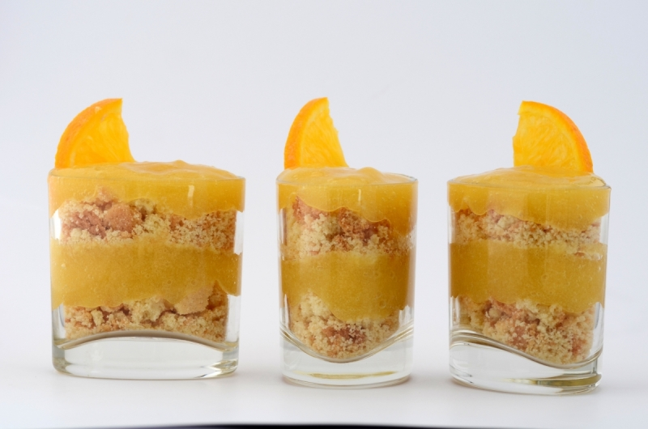

Crème de fruits. 
 2h
2h- Difficulté :

- Technique(s) : Epaississant
Ingrédients
Ck
Carraghénane kappa
- 2g de carraghénane kappa
- 1g de Carboxyméthylcellulose (cmc)
- 250mL de jus de fruits
- 50g de sucre en poudre

Préparation
- Mélanger le sucre en poudre et la Kappa Carraghénane. Ajouter aux jus de fruits et mixer.
- Porter à ébullition 1 minute tout en remuant.
- Verser dans un saladier et faire prendre en réfrigérateur pendant 2 heures.
- Mixer la gelée finement pour obtenir une préparation homogène.
- Ajouter la CMC préalablement mélangée avec un peu de sucre et mixer.
- Servir cette gelée dans des verrines avec des biscuits émiettés pour jouer sur les contrastes de textures.